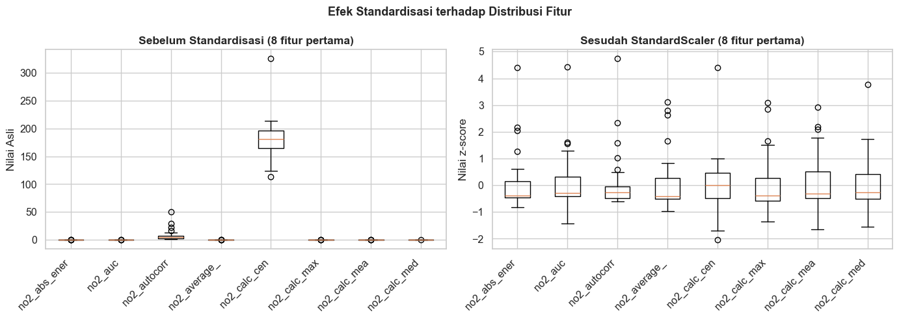
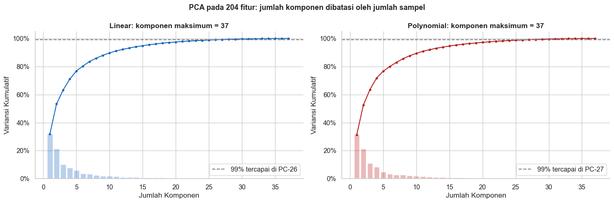
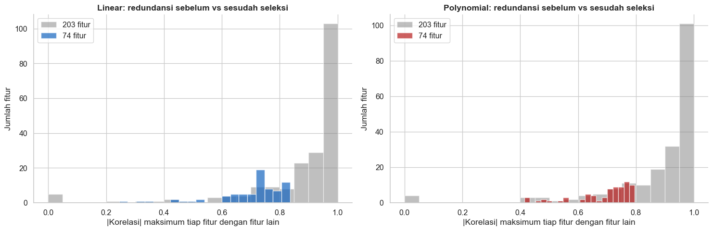
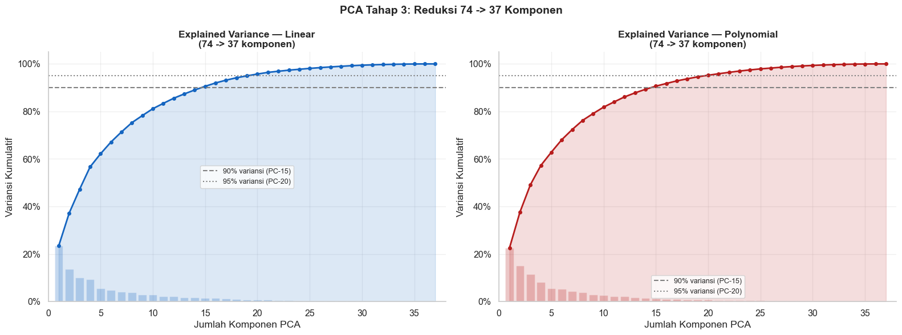
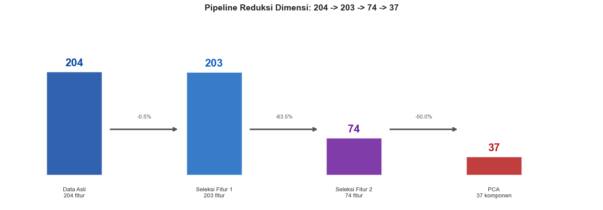

Tahap 2 — Reduksi Dimensi: 204 → 203 → 74 → 37#
Pada tahap ini data dari Tahap 1 (37 wilayah × 204 fitur) direduksi bertahap:
Mengapa tidak PCA di setiap tahap?#
PCA hanya bisa menghasilkan komponen sebanyak min(jumlah sampel, jumlah fitur). Dengan 37 wilayah, PCA paling banyak 37 komponen (dan hanya 36 yang benar-benar membawa variansi, karena setelah data di-centering rangkingnya n−1). Karena itu PCA(n_components=203) dan PCA(n_components=74) menghasilkan error:
ValueError: n_components=203 must be between 0 and min(n_samples, n_features)=37
Agar urutan 204 → 203 → 74 → 37 tetap bisa dijalankan, tahap 1 dan 2 memakai seleksi fitur berbasis korelasi (membuang fitur yang paling redundan, kolom yang tersisa tetap fitur asli), lalu tahap 3 memakai PCA untuk menghasilkan 37 dimensi akhir.
Tahap |
Dimensi |
Metode |
Keterangan |
|---|---|---|---|
1 |
204 → 203 |
Seleksi fitur |
Buang 1 fitur paling redundan |
2 |
203 → 74 |
Seleksi fitur |
Buang 129 fitur paling redundan |
3 |
74 → 37 |
PCA |
Proyeksi ke 37 komponen |
Seleksi dilakukan pada fitur asli sehingga hasil 203 dan 74 masih bisa ditelusuri ke nama fiturnya.
2.1 Import Library & Load Data Tahap 1#
import warnings
warnings.filterwarnings('ignore')
import os
import pickle
import numpy as np
import pandas as pd
import matplotlib.pyplot as plt
import seaborn as sns
from sklearn.preprocessing import StandardScaler
from sklearn.decomposition import PCA
plt.rcParams['figure.figsize'] = (13, 5)
sns.set_theme(style='whitegrid', font_scale=1.05)
# ── Cari folder output yang berisi hasil Tahap 1 ─────────────
OUTPUT_DIR = None
for kandidat in ['output', '../output']:
if os.path.exists(os.path.join(kandidat, 'tahap1_data.pkl')):
OUTPUT_DIR = kandidat
break
if OUTPUT_DIR is None:
raise FileNotFoundError(
'File tahap1_data.pkl tidak ditemukan di "output/" maupun "../output/". '
'Jalankan notebook Tahap 1 sampai sel terakhir (Simpan Data) terlebih dulu.'
)
with open(os.path.join(OUTPUT_DIR, 'tahap1_data.pkl'), 'rb') as f:
d = pickle.load(f)
X_linear = d['X_linear']
X_poly = d['X_poly']
meta_linear = d['meta_linear']
meta_poly = d['meta_poly']
assert X_linear.shape[0] > 1 and X_poly.shape[0] > 1, 'Data Tahap 1 kosong, ulangi Tahap 1.'
assert X_linear.select_dtypes('number').shape[1] == X_linear.shape[1], 'Data Tahap 1 tidak numerik.'
N_SAMPEL = X_poly.shape[0]
print(f'Data Tahap 1 dimuat dari: {os.path.abspath(OUTPUT_DIR)}')
print(f' X_linear : {X_linear.shape}')
print(f' X_poly : {X_poly.shape}')
Data Tahap 1 dimuat dari: C:\Users\OKAN\OneDrive\Dokumen\PSD\materi\Clustering_Segmentasi\output
X_linear : (37, 204)
X_poly : (37, 204)
2.2 Standardisasi Data (StandardScaler)#
Setiap fitur diubah ke mean = 0 dan std = 1:
Ini mencegah fitur berskala besar mendominasi PCA pada tahap terakhir.
scaler_lin = StandardScaler()
scaler_poly = StandardScaler()
Xs_linear = scaler_lin.fit_transform(X_linear)
Xs_poly = scaler_poly.fit_transform(X_poly)
print('Setelah StandardScaler:')
print(f' Linear — shape: {Xs_linear.shape}, mean: {Xs_linear.mean():.6f}, std: {Xs_linear.std():.6f}')
print(f' Poly — shape: {Xs_poly.shape}, mean: {Xs_poly.mean():.6f}, std: {Xs_poly.std():.6f}')
# Sebelum vs sesudah (8 fitur pertama)
n_viz = min(8, X_poly.shape[1])
cols_viz = list(X_poly.columns[:n_viz])
lbl = [c[:12] for c in cols_viz]
fig, axes = plt.subplots(1, 2, figsize=(14, 5))
axes[0].boxplot([X_poly[c].values for c in cols_viz])
axes[0].set_xticklabels(lbl, rotation=45, ha='right')
axes[0].set_title(f'Sebelum Standardisasi ({n_viz} fitur pertama)', fontweight='bold')
axes[0].set_ylabel('Nilai Asli')
axes[1].boxplot([Xs_poly[:, i] for i in range(n_viz)])
axes[1].set_xticklabels(lbl, rotation=45, ha='right')
axes[1].set_title(f'Sesudah StandardScaler ({n_viz} fitur pertama)', fontweight='bold')
axes[1].set_ylabel('Nilai z-score')
plt.suptitle('Efek Standardisasi terhadap Distribusi Fitur', fontsize=13, fontweight='bold')
plt.tight_layout()
plt.savefig(f'{OUTPUT_DIR}/04_standardisasi.png', dpi=150, bbox_inches='tight')
plt.show()
Setelah StandardScaler:
Linear — shape: (37, 204), mean: 0.000000, std: 0.985184
Poly — shape: (37, 204), mean: 0.000000, std: 0.987669

2.3 Batas PCA: Berapa Dimensi yang Benar-benar Informatif?#
Sebelum memilih metode, kita cek berapa komponen yang bisa dihasilkan PCA dari data ini dan berapa variansi yang ditangkap.
fig, axes = plt.subplots(1, 2, figsize=(15, 5))
for ax, Xs, nama, color in [(axes[0], Xs_linear, 'Linear', '#1565C0'),
(axes[1], Xs_poly, 'Polynomial', '#B71C1C')]:
p_full = PCA(random_state=42).fit(Xs) # semua komponen yang mungkin
cum = np.cumsum(p_full.explained_variance_ratio_)
k = np.arange(1, len(cum) + 1)
n_99 = int(np.argmax(cum >= 0.99) + 1)
ax.bar(k, p_full.explained_variance_ratio_, color=color, alpha=0.3)
ax.plot(k, cum, 'o-', color=color, markersize=3)
ax.axhline(0.99, color='gray', linestyle='--', label=f'99% tercapai di PC-{n_99}')
ax.set_title(f'{nama}: komponen maksimum = {p_full.n_components_}', fontweight='bold')
ax.set_xlabel('Jumlah Komponen'); ax.set_ylabel('Variansi Kumulatif')
ax.yaxis.set_major_formatter(plt.FuncFormatter(lambda y, _: f'{y:.0%}'))
ax.legend(); ax.spines[['top', 'right']].set_visible(False)
print(f'{nama:<11}: {Xs.shape[0]} sampel x {Xs.shape[1]} fitur -> PCA maks {p_full.n_components_} komponen, '
f'variansi 99% dicapai di PC-{n_99}, komponen terakhir = {p_full.explained_variance_ratio_[-1]:.2e}')
plt.suptitle('PCA pada 204 fitur: jumlah komponen dibatasi oleh jumlah sampel', fontsize=13, fontweight='bold')
plt.tight_layout()
plt.savefig(f'{OUTPUT_DIR}/04a_batas_pca.png', dpi=150, bbox_inches='tight')
plt.show()
# Bukti: PCA 203 / 74 komponen tidak mungkin
for k in (203, 74):
try:
PCA(n_components=k).fit(Xs_poly)
except ValueError as e:
print(f'\nPCA({k}) -> ValueError: {str(e)[:110]}...')
Linear : 37 sampel x 204 fitur -> PCA maks 37 komponen, variansi 99% dicapai di PC-26, komponen terakhir = 1.90e-33
Polynomial : 37 sampel x 204 fitur -> PCA maks 37 komponen, variansi 99% dicapai di PC-27, komponen terakhir = 6.16e-32

PCA(203) -> ValueError: n_components=203 must be between 0 and min(n_samples, n_features)=37 with svd_solver='full'...
PCA(74) -> ValueError: n_components=74 must be between 0 and min(n_samples, n_features)=37 with svd_solver='full'...
Kesimpulan: PCA hanya bisa menghasilkan sebanyak jumlah sampel (37). Maka 204 → 203 → 74 dilakukan dengan seleksi fitur, dan PCA dipakai di tahap terakhir (74 → 37).
2.4 Fungsi Bantu#
def kurangi_fitur(X_df, target, nama=''):
"""
Seleksi fitur berbasis korelasi: membuang fitur paling redundan sampai tersisa `target` fitur.
1. Fitur konstan (std = 0) dibuang lebih dulu.
2. Selama fitur > target: cari pasangan fitur dengan |korelasi| tertinggi, lalu buang
salah satunya, yaitu yang rata-rata |korelasi|-nya terhadap fitur lain lebih besar.
Returns
-------
list nama fitur yang dipertahankan, list nama fitur yang dibuang
"""
kolom = list(X_df.columns)
dibuang = []
# 1) fitur konstan
konstan = [c for c in kolom if X_df[c].std() == 0 or np.isnan(X_df[c].std())]
for c in konstan[: max(0, len(kolom) - target)]:
dibuang.append(c)
sisa = [c for c in kolom if c not in dibuang]
# 2) pangkas yang paling redundan
C = np.array(X_df[sisa].corr().abs().fillna(0), dtype=float) # salinan yang bisa diubah
np.fill_diagonal(C, 0.0)
aktif = np.ones(len(sisa), dtype=bool)
while aktif.sum() > target:
idx = np.where(aktif)[0]
sub = C[np.ix_(idx, idx)]
i, j = np.unravel_index(np.argmax(sub), sub.shape)
gi, gj = idx[i], idx[j]
rata_i = C[gi, idx].mean()
rata_j = C[gj, idx].mean()
hapus = gi if rata_i >= rata_j else gj
aktif[hapus] = False
dibuang.append(sisa[hapus])
dipertahankan = [c for c, a in zip(sisa, aktif) if a]
assert len(dipertahankan) == target, f'{nama}: hasil {len(dipertahankan)} != target {target}'
return dipertahankan, dibuang
def rata_korelasi(X_df):
"""Rata-rata |korelasi| antar fitur (semakin kecil = semakin sedikit redundansi)."""
C = np.array(X_df.corr().abs().fillna(0), dtype=float)
n = C.shape[0]
return (C.sum() - n) / (n * (n - 1))
def jalankan_pca(X_scaled, n_comp, nama):
pca = PCA(n_components=n_comp, random_state=42)
X_pca = pca.fit_transform(X_scaled)
cumvar = np.cumsum(pca.explained_variance_ratio_)
print(f'[{nama}] {X_scaled.shape[1]} dimensi -> {n_comp} komponen')
print(f' Variansi PC-10 : {cumvar[min(9, n_comp-1)]:.2%}')
print(f' Variansi PC-{n_comp} : {cumvar[-1]:.2%}')
return pca, X_pca, cumvar
print('Fungsi kurangi_fitur(), rata_korelasi(), jalankan_pca() siap digunakan.')
Fungsi kurangi_fitur(), rata_korelasi(), jalankan_pca() siap digunakan.
2.5 Tahap 1: 204 → 203 Fitur#
Membuang 1 fitur yang paling redundan (fitur konstan lebih dulu, jika ada; selain itu fitur yang paling berkorelasi dengan fitur lain).
print('=== TAHAP 1: 204 -> 203 ===\n')
feat203_lin, drop1_lin = kurangi_fitur(X_linear, 203, 'Linear')
feat203_poly, drop1_poly = kurangi_fitur(X_poly, 203, 'Poly')
print(f'Linear : {X_linear.shape[1]} -> {len(feat203_lin)} fitur, dibuang: {drop1_lin}')
print(f'Poly : {X_poly.shape[1]} -> {len(feat203_poly)} fitur, dibuang: {drop1_poly}')
X_lin203_df = X_linear[feat203_lin]
X_poly203_df = X_poly[feat203_poly]
=== TAHAP 1: 204 -> 203 ===
Linear : 204 -> 203 fitur, dibuang: ['no2_human_range_energy']
Poly : 204 -> 203 fitur, dibuang: ['no2_human_range_energy']
2.6 Tahap 2: 203 → 74 Fitur#
Dari 203 fitur, dibuang 129 fitur paling redundan hingga tersisa 74 fitur yang saling paling tidak berkorelasi.
print('=== TAHAP 2: 203 -> 74 ===\n')
feat74_lin, drop2_lin = kurangi_fitur(X_lin203_df, 74, 'Linear')
feat74_poly, drop2_poly = kurangi_fitur(X_poly203_df, 74, 'Poly')
X_lin74_df = X_linear[feat74_lin]
X_poly74_df = X_poly[feat74_poly]
print(f'Linear : 203 -> {len(feat74_lin)} fitur ({len(drop2_lin)} dibuang)')
print(f'Poly : 203 -> {len(feat74_poly)} fitur ({len(drop2_poly)} dibuang)')
# Tingkat redundansi sebelum vs sesudah
r_before_l, r_after_l = rata_korelasi(X_lin203_df), rata_korelasi(X_lin74_df)
r_before_p, r_after_p = rata_korelasi(X_poly203_df), rata_korelasi(X_poly74_df)
print(f'\nRata-rata |korelasi| antar fitur:')
print(f' Linear : {r_before_l:.3f} (203 fitur) -> {r_after_l:.3f} (74 fitur)')
print(f' Poly : {r_before_p:.3f} (203 fitur) -> {r_after_p:.3f} (74 fitur)')
fig, axes = plt.subplots(1, 2, figsize=(15, 5))
for ax, a, b, nama, color in [(axes[0], X_lin203_df, X_lin74_df, 'Linear', '#1565C0'),
(axes[1], X_poly203_df, X_poly74_df, 'Polynomial', '#B71C1C')]:
def max_corr(df):
C = np.array(df.corr().abs().fillna(0), dtype=float); np.fill_diagonal(C, 0)
return C.max(axis=1)
ax.hist(max_corr(a), bins=20, alpha=0.5, color='gray', label='203 fitur')
ax.hist(max_corr(b), bins=20, alpha=0.7, color=color, label='74 fitur')
ax.set_xlabel('|Korelasi| maksimum tiap fitur dengan fitur lain')
ax.set_ylabel('Jumlah fitur')
ax.set_title(f'{nama}: redundansi sebelum vs sesudah seleksi', fontweight='bold')
ax.legend(); ax.spines[['top', 'right']].set_visible(False)
plt.tight_layout()
plt.savefig(f'{OUTPUT_DIR}/05_seleksi_fitur.png', dpi=150, bbox_inches='tight')
plt.show()
=== TAHAP 2: 203 -> 74 ===
Linear : 203 -> 74 fitur (129 dibuang)
Poly : 203 -> 74 fitur (129 dibuang)
Rata-rata |korelasi| antar fitur:
Linear : 0.306 (203 fitur) -> 0.240 (74 fitur)
Poly : 0.304 (203 fitur) -> 0.245 (74 fitur)

2.7 Tahap 3: 74 → 37 Komponen (PCA)#
74 fitur hasil seleksi distandarisasi lalu diproyeksikan dengan PCA ke 37 komponen. Ini valid karena 37 ≤ min(37 sampel, 74 fitur).
Note
Dengan 37 sampel, rangking data setelah centering hanya 36, sehingga komponen ke-37 hampir tidak membawa variansi (≈ 0). Komponen ini dipertahankan agar dimensi akhir tetap 37 sesuai ketentuan tugas.
Xs_lin74 = StandardScaler().fit_transform(X_lin74_df)
Xs_poly74 = StandardScaler().fit_transform(X_poly74_df)
print('=== TAHAP 3: 74 -> 37 (PCA) ===\n')
pca_lin, X_lin37, cv_lin = jalankan_pca(Xs_lin74, 37, 'Linear')
print()
pca_poly, X_poly37, cv_poly = jalankan_pca(Xs_poly74, 37, 'Poly')
=== TAHAP 3: 74 -> 37 (PCA) ===
[Linear] 74 dimensi -> 37 komponen
Variansi PC-10 : 81.15%
Variansi PC-37 : 100.00%
[Poly] 74 dimensi -> 37 komponen
Variansi PC-10 : 81.81%
Variansi PC-37 : 100.00%
fig, axes = plt.subplots(1, 2, figsize=(16, 6))
pcs = np.arange(1, 38)
for ax, cumvar, pca_obj, nama, color in [
(axes[0], cv_lin, pca_lin, 'Linear', '#1565C0'),
(axes[1], cv_poly, pca_poly, 'Polynomial', '#B71C1C')]:
ax.fill_between(pcs, cumvar, alpha=0.15, color=color)
ax.plot(pcs, cumvar, 'o-', color=color, linewidth=2, markersize=4)
ax.bar(pcs, pca_obj.explained_variance_ratio_, alpha=0.25, color=color, width=0.8)
for thresh, ls in [(0.90, '--'), (0.95, ':')]:
n_t = int(np.argmax(cumvar >= thresh) + 1)
ax.axhline(thresh, color='gray', linestyle=ls, linewidth=1.5, label=f'{thresh:.0%} variansi (PC-{n_t})')
ax.set_xlim(0, 38); ax.set_ylim(0, 1.05)
ax.yaxis.set_major_formatter(plt.FuncFormatter(lambda y, _: f'{y:.0%}'))
ax.set_xlabel('Jumlah Komponen PCA'); ax.set_ylabel('Variansi Kumulatif')
ax.set_title(f'Explained Variance — {nama}\n(74 -> 37 komponen)', fontweight='bold')
ax.legend(fontsize=9); ax.spines[['top', 'right']].set_visible(False); ax.grid(True, alpha=0.3)
plt.suptitle('PCA Tahap 3: Reduksi 74 -> 37 Komponen', fontsize=14, fontweight='bold')
plt.tight_layout()
plt.savefig(f'{OUTPUT_DIR}/06_pca_tahap3.png', dpi=150, bbox_inches='tight')
plt.show()
print('Gambar disimpan: output/06_pca_tahap3.png')

Gambar disimpan: output/06_pca_tahap3.png
2.8 Ringkasan Semua Representasi Data#
Setelah semua tahap, tersedia 8 representasi data yang siap dipakai pada eksperimen clustering (Tahap 3):
Nama |
Dimensi |
Keterangan |
|---|---|---|
|
37 × 204 |
Fitur asli linear (standardized) |
|
37 × 203 |
Seleksi fitur tahap 1 (standardized) |
|
37 × 74 |
Seleksi fitur tahap 2 (standardized) |
|
37 × 37 |
PCA 74 → 37 |
|
37 × 204 |
Fitur asli polynomial (standardized) |
|
37 × 203 |
Seleksi fitur tahap 1 (standardized) |
|
37 × 74 |
Seleksi fitur tahap 2 (standardized) |
|
37 × 37 |
PCA 74 → 37 |
representasi = {
'Linear-204' : Xs_linear,
'Linear-203' : StandardScaler().fit_transform(X_lin203_df),
'Linear-74' : Xs_lin74,
'Linear-37' : X_lin37,
'Poly-204' : Xs_poly,
'Poly-203' : StandardScaler().fit_transform(X_poly203_df),
'Poly-74' : Xs_poly74,
'Poly-37' : X_poly37,
}
print(f'{"Nama":<12} {"Bentuk":<12} Keterangan')
print('-' * 62)
ket = {'204': 'fitur asli', '203': 'seleksi fitur 1', '74': 'seleksi fitur 2', '37': 'PCA (variansi 74 fitur: '}
for nama, X in representasi.items():
dim = nama.split('-')[1]
extra = ket[dim]
if dim == '37':
extra += f"{(cv_lin if nama.startswith('Linear') else cv_poly)[-1]:.1%})"
print(f'{nama:<12} {str(X.shape):<12} {extra}')
assert all(X.shape[0] == N_SAMPEL and not np.isnan(X).any() for X in representasi.values())
print('\nSemua 8 representasi valid (tanpa NaN) dan siap untuk eksperimen clustering.')
Nama Bentuk Keterangan
--------------------------------------------------------------
Linear-204 (37, 204) fitur asli
Linear-203 (37, 203) seleksi fitur 1
Linear-74 (37, 74) seleksi fitur 2
Linear-37 (37, 37) PCA (variansi 74 fitur: 100.0%)
Poly-204 (37, 204) fitur asli
Poly-203 (37, 203) seleksi fitur 1
Poly-74 (37, 74) seleksi fitur 2
Poly-37 (37, 37) PCA (variansi 74 fitur: 100.0%)
Semua 8 representasi valid (tanpa NaN) dan siap untuk eksperimen clustering.
fig, ax = plt.subplots(figsize=(14, 5))
tahapan = [('Data Asli\n204 fitur', 204, '#0D47A1'),
('Seleksi Fitur 1\n203 fitur', 203, '#1565C0'),
('Seleksi Fitur 2\n74 fitur', 74, '#6A1B9A'),
('PCA\n37 komponen', 37, '#B71C1C')]
x_pos, max_dim = [1, 3, 5, 7], 210
for i, ((label, dim, color), x) in enumerate(zip(tahapan, x_pos)):
height = (dim / max_dim) * 3.5
ax.add_patch(plt.Rectangle((x - 0.4, 0.5), 0.8, height, facecolor=color, alpha=0.85, edgecolor='white', linewidth=2))
ax.text(x, height + 0.6, f'{dim}', ha='center', va='bottom', fontsize=18, fontweight='bold', color=color)
ax.text(x, 0.1, label, ha='center', va='top', fontsize=9.5, color='#333', multialignment='center')
if i < len(tahapan) - 1:
ax.annotate('', xy=(x_pos[i+1] - 0.5, 2.0), xytext=(x + 0.5, 2.0),
arrowprops=dict(arrowstyle='->', color='#555', lw=2.5))
pct = (1 - tahapan[i+1][1] / dim) * 100
ax.text((x + x_pos[i+1]) / 2, 2.35, f'-{pct:.1f}%', ha='center', fontsize=9, color='#555')
ax.set_xlim(0, 8.5); ax.set_ylim(-0.5, 5.5); ax.axis('off')
ax.set_title('Pipeline Reduksi Dimensi: 204 -> 203 -> 74 -> 37', fontsize=14, fontweight='bold', pad=20)
plt.tight_layout()
plt.savefig(f'{OUTPUT_DIR}/04c_pipeline_reduksi.png', dpi=150, bbox_inches='tight')
plt.show()
print('Gambar disimpan: output/04c_pipeline_reduksi.png')

Gambar disimpan: output/04c_pipeline_reduksi.png
2.9 Simpan Hasil untuk Tahap 3#
save_data = {
'representasi': representasi,
'meta_linear' : meta_linear,
'meta_poly' : meta_poly,
'X_linear' : X_linear,
'X_poly' : X_poly,
# fitur yang dipertahankan di tiap tahap seleksi
'feat203_lin' : feat203_lin, 'feat203_poly': feat203_poly,
'feat74_lin' : feat74_lin, 'feat74_poly' : feat74_poly,
# variansi PCA tahap akhir (74 -> 37)
'cv_lin' : cv_lin,
'cv_poly' : cv_poly,
}
save_path = os.path.join(OUTPUT_DIR, 'tahap2_pca.pkl')
with open(save_path, 'wb') as f:
pickle.dump(save_data, f)
print(f'Hasil disimpan : {os.path.abspath(save_path)}')
print(f'Ukuran file : {os.path.getsize(save_path)/1024:.1f} KB')
print(f'Jumlah representasi: {len(representasi)}')
print('\n→ Lanjut ke Tahap 3: Eksperimen Clustering & Silhouette Analysis')
Hasil disimpan : C:\Users\OKAN\OneDrive\Dokumen\PSD\materi\Clustering_Segmentasi\output\tahap2_pca.pkl
Ukuran file : 434.3 KB
Jumlah representasi: 8
→ Lanjut ke Tahap 3: Eksperimen Clustering & Silhouette Analysis